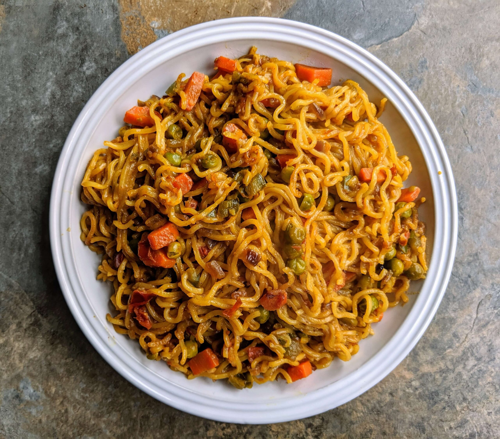

Recipie of Maggie

Ingredients
- 1 pack of Maggi noodles
- 1 ½ cups of water
- Maggi tastemaker (included in the pack)
- Optional add-ons: vegetables (carrot, peas, capsicum), an egg, cheese, etc.
Steps
- Boil water: Pour 1 ½ cups of water into a pan and bring it to a boil.
- Add noodles: Once the water is boiling, add the Maggi noodles (break them if you prefer shorter strands)
- Add tastemaker: Add the Maggi tastemaker that comes with the pack into the boiling noodles.
- Cook: Let the noodles cook for 2 minutes while stirring occasionally to prevent them from sticking to the pan.
- Optional add-ons: If you're adding veggies, put them in with the noodles. If adding an egg, you can beat it and add it at this point. You can also sprinkle some cheese on top.
- Serve: Once the water is absorbed and the noodles are cooked, serve hot.
Back to Home Page